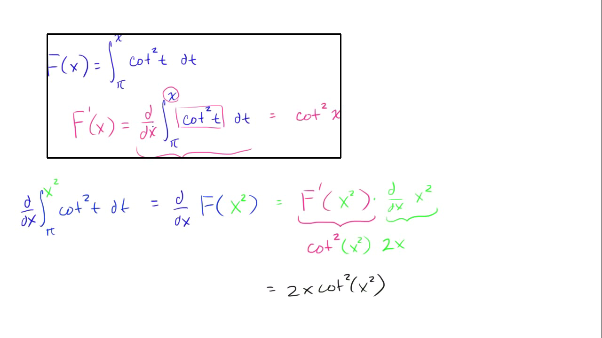

Let's say that we have capital F of x as being equal to the definite integral from pi to x of cotangent squared of t dt. And what we're curious about finding is the derivative of this business. We want to figure out what F prime of x is equal to. Well this is a direct application of the fundamental theorem of calculus. This is just going to be the derivative with respect to x of all of this craziness. So let me just copy and paste that. So it's just going to be the derivative with respect to that. And the fundamental theorem of calculus tells us that this is going to be equal to just this function, but it's not going to be a function of t anymore. It's going to be a function of x. So it's going to be equal to cotangent squared of x. And you'll often see problems like this if you go to calculus competitions or things like that and, or maybe certain exams.
And It's like, oh my god, I have to take the antiderivative of all of this business, evaluate it at the different boundaries, and then I got to take the derivative. No. You just apply the fundamental theorem of calculus, and it's actually a very straightforward and a very fast thing to do. Now let's mix it up a little bit.

Let's say that you had the expression the definite integral from pi-- instead of from pi to x, let's say it's from pi to x squared-- and let me write that x squared in a different color just to make it clear what I'm doing-- from pi to x squared of cotangent squared of t dt. And you wanted to take the derivative of this business. So you want to take the derivative with respect to x of this business. How would you do it? Well the recognition here is that this is capital-- capital F of x was defined as this. Now instead of an x, you have an x squared. So this is the exact same thing as taking the derivative with respect to x of capital F of-- not x. That would be this. Instead, we have capital F of x squared. Where we had an x here before, we now have an x squared. You can verify. If you had capital F of x squared, every place where you saw the x here would be an x squared. So it would look exactly like this. And so we just have to apply the chain rule. So this is going to be equal to the derivative of F with respect to x squared. And this is just straight out of the chain rule. It's going to be F prime of x squared times the derivative with respect to x of x squared. This is the derivative of F with respect to x squared and then times the derivative of x squared with respect to x. This is just the chain rule right over here. So what's F prime of x squared-- the derivative of F with respect to x squared? Well, if you evaluate F prime at x squared, instead of just being cotangent squared of x, it's going to be cotangent squared of x squared. So this part right over here, this business right over here, is going to be cotangent squared of x squared. So this is the derivative of all of this business with respect to x squared, and then you have to multiply that times the derivative of x squared with respect to x, which is just 2x.